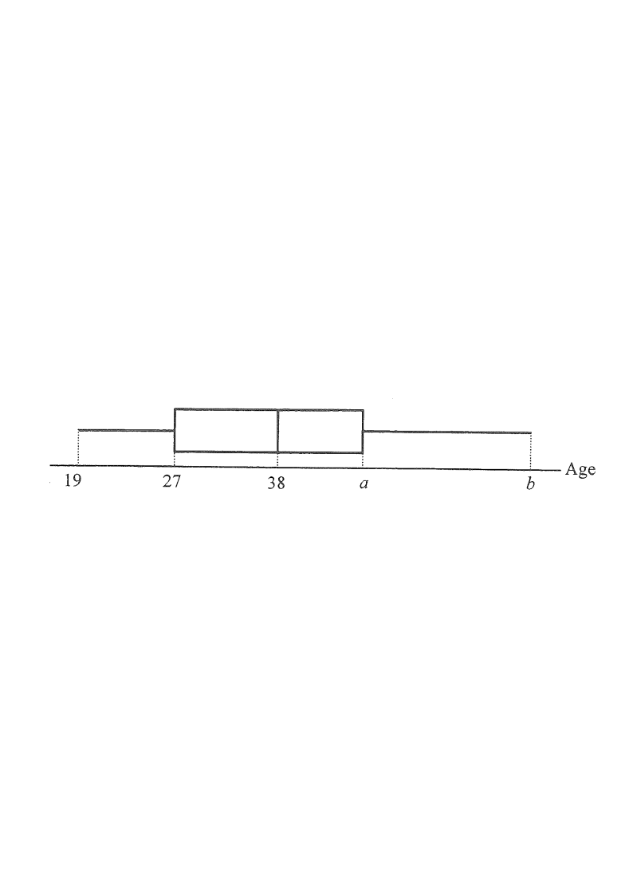

Box / quartilesMedianWhiskers (min / max)Unknown aUnknown b
HKDSE 2018 Paper 1 — Q10 (15. Statistics)
[2018#10]
The box-and-whisker diagram below shows the distribution of the ages of the clerks in team $X$ of a company. It is given that the range and the inter-quartile range of this distribution are $43$ and $21$ respectively.
The diagram has lower quartile $27$, median $38$, upper quartile $a$, lower extreme $19$ and upper extreme $b$ (all ages in years).
(a) Find $a$ and $b$. [3 marks]
Hint: Use IQR $=Q_3-Q_1$ and range $= \text{max}-\text{min}$.
(b) There are five clerks in team $Y$ of the company and three of them are of age $38$. It is given that the range of the ages of the clerks in team $Y$ is $20$. Team $X$ and team $Y$ are now combined to form a section. The manager of the company claims that the range of the ages of the clerks in the section and the range of the ages of the clerks in team $X$ must be the same. Do you agree? Explain your answer. [2 marks]
Hint: Try to make the section range as small as possible.

Figure (original exam diagram)
Solution
1Part (a) — find a
Inter-Quartile Range\(\text{IQR}=Q_{3}-Q_{1}\)With \(\text{IQR}=18\) and \(Q_{1}=22\), \(Q_{3}=22+18=40\).
The inter-quartile range is $21$, so
\[ a - 27 = 21 \;\Rightarrow\; a = 48. \]
Key: IQR $=Q_3-Q_1$. LQ $=27$ is already known.
2Part (a) — find b
Range of a Data Set\(R=x_{\max}-x_{\min}\)With range 51 and minimum 17, the maximum is \(17+51=68\).
The range is $43$, so
\[ b - 19 = 43 \;\Rightarrow\; b = 62. \]
Key: Range $= \text{maximum} - \text{minimum}$. Min $=19$.
3Part (b) — smallest possible age in Y
Three clerks in team $Y$ are aged $38$. The range of team $Y$ is $20$. To minimise the section range, put the smallest possible age in $Y$ as low as possible:
\[ 38 - 20 = 18. \]
So the least possible age of a clerk in team $Y$ is $18$.
Key: The maximum of $Y$ is at least $38$; keeping $38$ as the maximum makes the minimum $38-20=18$.
4Part (b) — compare ranges
Team $X$ has ages from $19$ to $62$, so its range is $43$.
In the combined section, the least possible age is $\min(19,18)=18$ and the greatest possible age is $\max(62,38)=62$. Hence the greatest possible range of the section is
\[ 62 - 18 = 44. \]
Key: The section range could be $44$, which is not equal to $43$.
5Conclusion
Since $44 \neq 43$, the claim is not necessarily true. The ranges need not be the same.
Key: A counter-example range $44$ disproves the manager's claim.
Answer: (a) $a=48$, $b=62$. (b) No — the greatest possible range of the section is $62-18=44\neq43$, so the manager's claim is disagreed with.
PRACTICESimilar question — try it yourself
Question. The inter-quartile range of the ages in team X is 18 and the lower quartile is 22. The range of the ages in team X is 51 and the youngest member is 17. (a) Find the upper quartile and the oldest age in team X. (b) Team Y has three members aged 45 and the range of team Y is 30. A manager claims that the range of the whole section (teams X and Y together) must equal the range of team X. Do you agree?
Show the worked solution
Step 1. (a) \(Q_{3}=Q_{1}+\text{IQR}=22+18=40\).
Step 2. (a) The oldest age is \(17+51=68\), so team X has ages from 17 to 68.
Step 3. (b) Team Y has a member aged 45 and range 30, so its youngest possible member is \(45-30=15\).
Step 4. (b) The greatest possible range of the section is \(68-15=53\), which is not equal to 51. So the claim is disagreed.
Answer: (a) \(Q_{3}=40\), oldest \(=68\) (b) No — the section range can be \(53\neq51\).